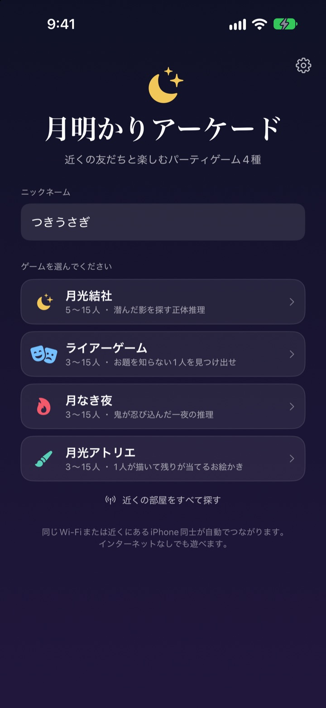
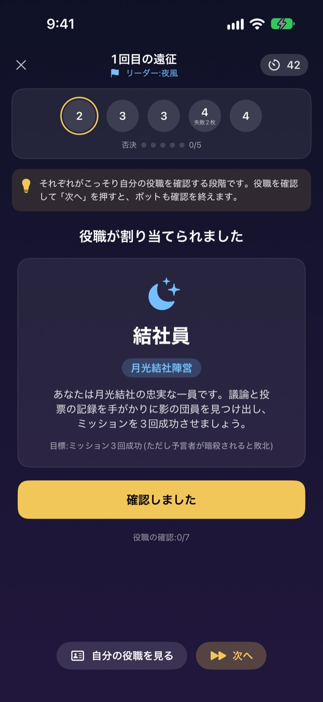
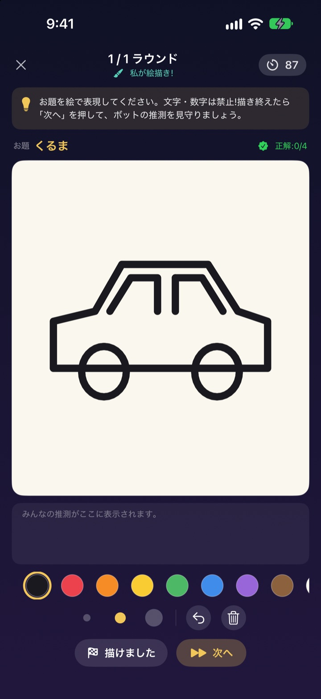
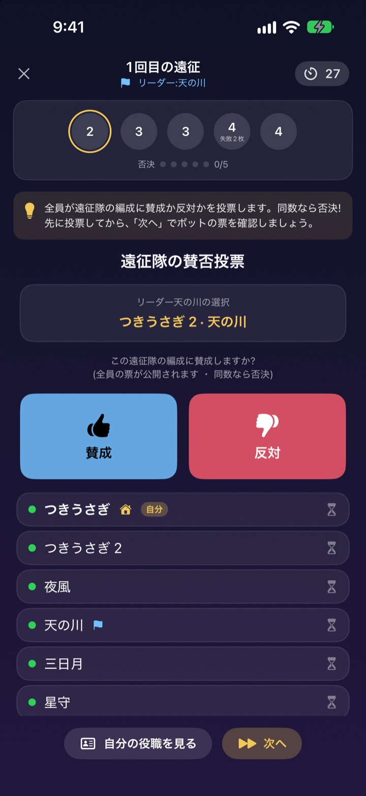

集まったら、
それぞれのiPhoneで
ひとりが部屋を作れば、近くのみんながすぐ入れます。役職やお題は自分の画面にだけ届くので、カードも進行役もいりません。
全ゲーム無料。アカウントもネット接続も不要です。

ライアーゲームを1回体験
テーブルにiPhoneが5台あると思って、1台ずつタップして確かめてください。お題を知らないのは1人だけ。友だちと画面を回しながら遊んでもOKです。
人は集まったのに、何して遊ぶか決まらない
合宿、飲み会の二次会、お正月の親戚の集まり。人狼をやるなら誰かが進行役に回って抜けなければならず、紙のメモは折っても透けて見えます。Wi-Fiの弱い宿ではオンラインゲームも無理。月明かりアーケードなら、進行も役職配りも接続も、iPhoneが引き受けます。
役職もお題も、自分の画面だけに
ゲームが始まると、それぞれのiPhoneに役職やお題が別々に届きます。カードを配ったり、全員で目を閉じたりする必要はありません。
投票中に見えるのは誰が投票を終えたかだけ。誰に入れたかは公開まで秘密です。

場の空気に合わせて4つのゲーム
話術で勝負するライアーゲーム、遠征と投票で影を探す月光結社、一晩のうちに鬼を見つける月なき夜、ひとりが描いてみんなで当てる月光アトリエ。
月光結社は5人から、ほかは3人から、どれも最大15人まで遊べます。

初めてのゲームもすぐ覚えられる
どのゲームにも遊び方モードがあり、ボットと1ステップずつ実際に遊びながらルールを覚えられます。画面上の案内を読んで「次へ」を押すだけです。
アプリが落ちても接続が切れても、ホーム画面の「続きから」で同じゲームにそのまま戻れます。

始め方は3ステップ
- 1
ニックネームとゲームを選ぶ
全員アプリを開いてニックネームを入れ、遊ぶゲームを選びます。
- 2
部屋を作る、参加する
ひとりが部屋を作り、ほかの人は「近くの部屋を探す」から入ります。
- 3
ホストが開始
全員そろったらホストが「ゲーム開始」を押します。進行はアプリにおまかせ。
4つのゲーム
- ライアーゲーム・3〜15人
- 全員が同じお題を受け取りますが、1人だけ知りません。順番にひと言ずつ説明して、投票でライアーを探します。捕まったライアーがお題を当てれば逆転勝ちです。
- 月光結社・5〜15人
- 結社員の中に潜む影を探す正体推理です。リーダーが遠征隊を選ぶと全員が賛否を投票し、遠征隊はこっそり成功か失敗を出します。先に遠征3回が成功するか失敗するかで決着します。
- 月なき夜・3〜15人
- 鬼が紛れ込んだ一夜です。夜のあいだにシャーマン、夜泥棒、いたずら者がこっそり動き、夜が明けたら話し合いのあと一度きりの投票で鬼を探します。
- 月光アトリエ・3〜15人
- ひとりがお題を絵に描き、ほかの人はチャットで当てます。早く当てるほど高得点で、当てた人が多いほど描いた人にも点が入ります。
どのゲームも、遊び方モードでひとりでボットと先に試せます。
よくある質問
近くの部屋が見つかりません。
ホストと参加者が同じWi-Fiにいるか、近くにいるか確認してください。設定 ▸ プライバシーとセキュリティ ▸ ローカルネットワークで月明かりアーケードがオンになっている必要があります。Wi-FiとBluetoothを両方オンにしておくと、いちばん安定してつながります。
ローカルネットワークの許可は必要ですか？
はい。近くのiPhoneを見つけてつなぐために使います。うっかり許可しなかった場合は、設定 ▸ プライバシーとセキュリティ ▸ ローカルネットワークでオンにできます。
ゲーム中に接続が切れました。
アプリを開き直してホーム画面の「続きから」を押せば、同じ部屋の同じゲームに戻れます。役職もスコアもそのままです。しばらく戻れない場合は、部屋の一覧から参加し直してください。
反応しない人がいてゲームが止まりました。
ホストは反応のない参加者をいつでも退出させられ、ゲームは残った人数で判定し直して続きます。GM進行役モードでは止まった段階を飛ばすこともできます。
最低何人いれば遊べますか？
月光結社は5人、ライアーゲーム、月なき夜、月光アトリエは3人から始められ、どれも最大15人まで遊べます。人数が足りないときは、遊び方モードでボットとルールを覚えておきましょう。
ネットやアカウントは必要ですか？
いいえ。会員登録もログインもネット接続もなしで、近くのiPhone同士が直接つながって遊びます。ゲームのデータはサーバーに送られません。
先にひとりで試せますか？
はい。ゲームを選んで「遊び方(ボットと練習)」を選ぶと、ボットが部屋に入り、1ゲームを1ステップずつ遊べます。
不具合の報告や要望はどこに送ればいいですか？
アプリの設定(歯車) ▸ サポートから直接送るか、下のメールアドレスまでご連絡ください。できるだけ早くお返事します。
不具合の報告、要望、そのほかのお問い合わせは mizzking75@gmail.com までどうぞ。